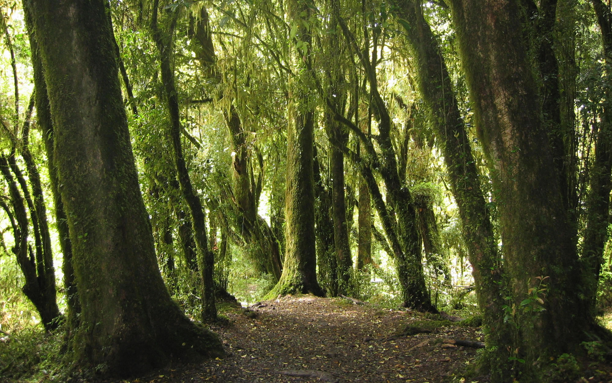
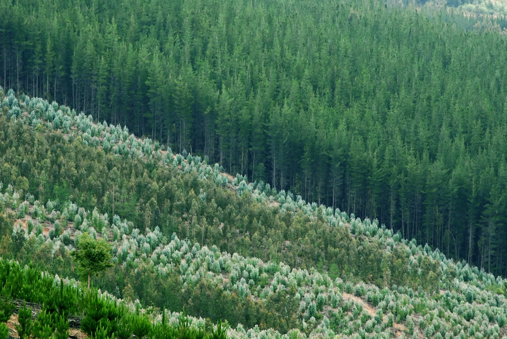
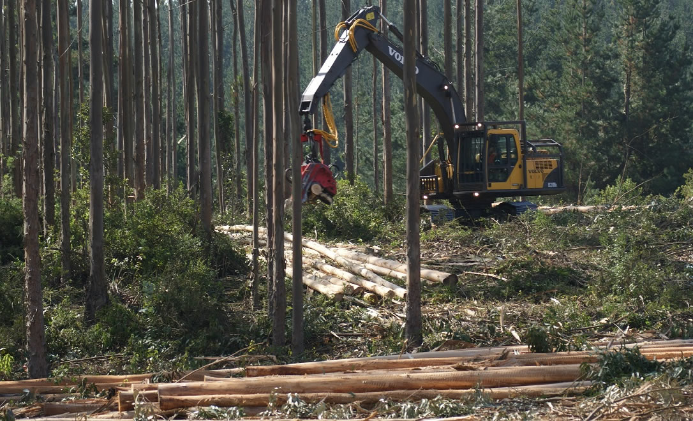

Ingreso usuario registrado
Versión de prueba: el ingreso todavía no valida credenciales. Los datos ingresados no se guardan ni se envían.
Importante
Herramienta de apoyo para construir la tabla de rodal inicial y residual a partir del inventario de parcelas, y evaluar tipo forestal, estado de desarrollo, categoría de bosque y cumplimiento de las Bases Técnicas 2026.